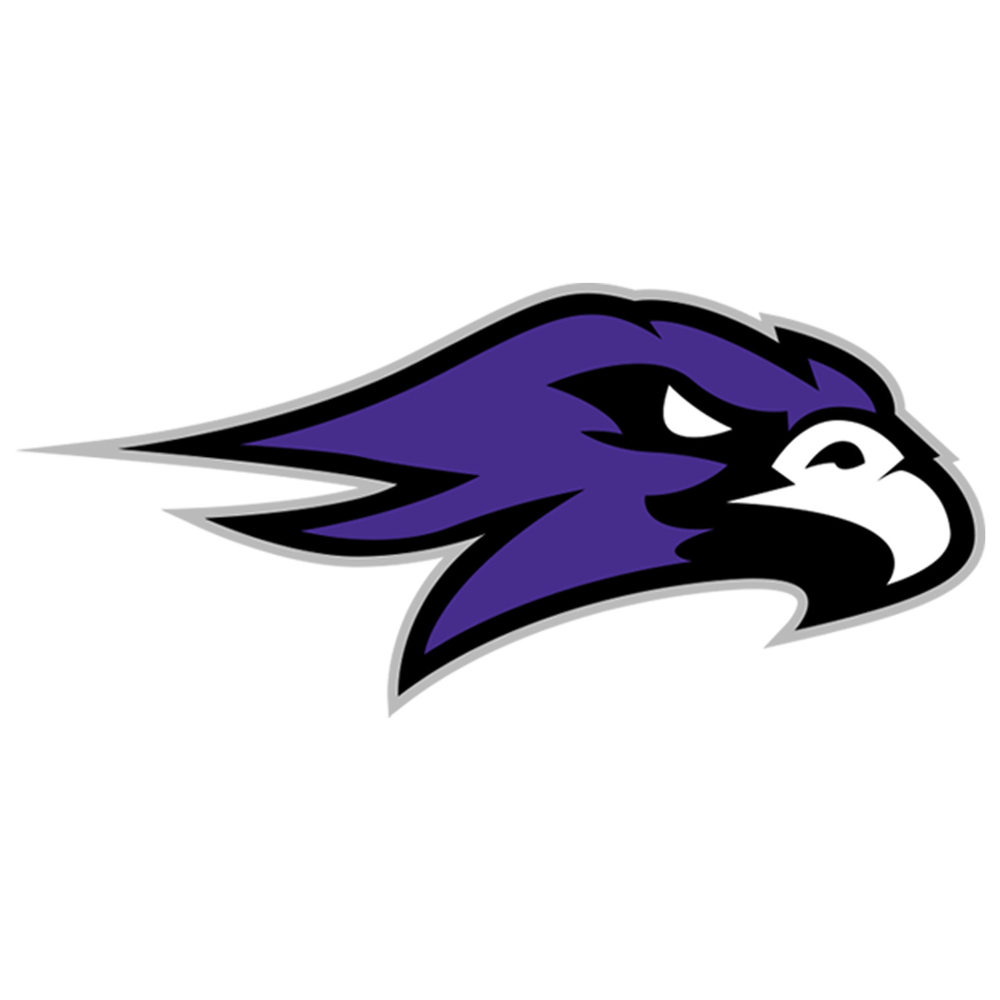

Mission Oak High School (2011-2015)
I graduated from Mission Oak High School as a co-valedictorian, a California Scholastic Federation Lifetime Member, and with high honors in English, Math, Social Studies, and Science.
I also volunteered with Harvesting Hope Tulare County and helped redesign the Varsity Football helmets during my junior year in high school and even made poster designs for football games!